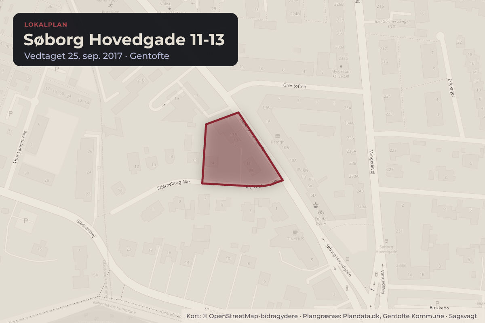
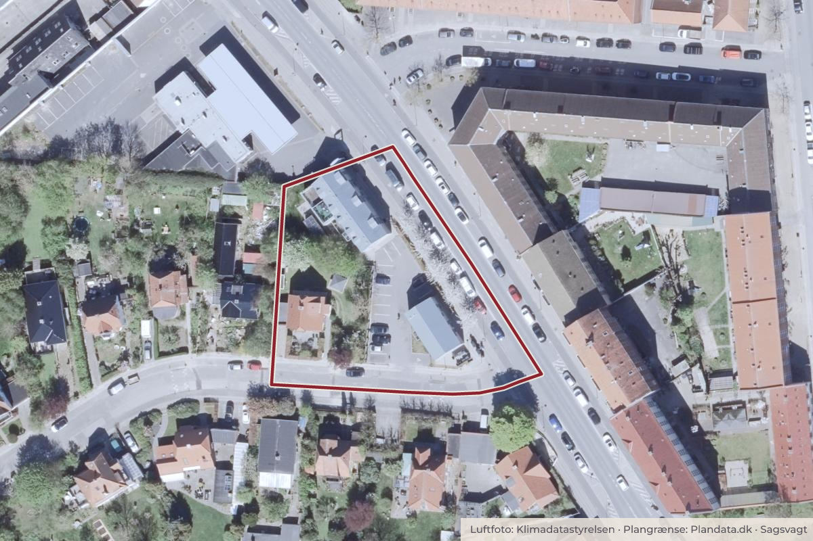

Besluttet 14. september, Byplanudvalget, Gentofte
Lokalplan for Søborg Hovedgade 17. Fortsat planproces

Kort: © OpenStreetMap-bidragydere. Plangrænse: Plandata.dk, Gentofte Kommune.

Kort fortalt
- Hvem
- Byplanudvalget, Gentofte Kommune
- Hvornår
- Mandag 14. september 2026
- Status
- Besluttet. Udsat.
Er noget forkert her? Skriv til os
Læs hele sagen Kommunens egen tekst
Baggrund
Byplanudvalget vedtog enstemmigt den 2. marts 2026, pkt. 3, at afholde indledende
borgermøde om projektforslaget til udvikling af ejendommen med den lukkede tankstation på
Søborg Hovedgade 17.
Projektet omfatter en ny bebyggelse umiddelbart langs Søborg Hovedgade, med butikker i
stueetagens gadevendte halvdel og boliger i det øvrige etageareal. Bebyggelsen er i 4 etager
med synlig tagkonstruktion og en samlet højde på 17,5 m. Bebyggelsesprocenten er 100.
Kommuneplanens parkeringsnormer for boliger og butikker opfyldes ved, at cirka halvdelen af
de krævede parkeringspladser etableres i en parkeringskælder, mens resten etableres på
terræn.
Indledende borgermøde
Der blev afholdt indledende borgermøde den 12. maj 2026. Overordnet var de fleste fremmødte
positivt indstillet over for en udvikling af ejendommen med de ønskede anvendelser, men flere
udtrykte bekymringer i forhold til det konkrete projekt.
Flere borgere gav udtryk for, at byggeriet er for højt. En række naboer fra sidevejen Stjerneborg
Alle var bekymrede for, at deres baghaver ville virke mere ”lukkede”, og at der ville komme
indbliksgener fra de nye altaner. De gjorde i øvrigt opmærksom på, at der var en markant
terrænforskel mellem deres ejendomme og den aktuelle projektejendom.
En borger bosat over for ejendommen var bekymret for reduktion af lysforholdene i sin lejlighed
og på sin altan på grund af den nye bygning.
Forvaltningen vurderer, at den foreslåede bebyggelses omfang ikke er usædvanligt i forhold til
omgivelserne. Søborg Hovedgade er tæt bebygget, og forslaget ligger inden for
kommuneplanens rammebestemmelser.
Det aktuelle projekts sydlige bygningshjørne er placeret 5 m fra skel mod nærmeste nabo og
udføres i fuld højde. Da bebyggelsen ikke ligger parallelt med skellet, er det kun denne
villaejendom, der ligger nærmere end 15 m fra bebyggelsen.
En deltager anførte, at tilføjelsen af en café eller lignende på adressen ville betyde, at de
eksisterende restaurationer på Søborg Hovedgade ville miste indtægt og kunne blive nødsaget
til at lukke.
En borger satte spørgsmålstegn ved den høje parkeringsnorm – der nødvendiggør anlæg af en
parkeringskælder – og den deraf følgende klimapåvirkning. De fleste af de øvrige fremmødte
gav udtryk for, at der var behov for parkeringspladserne, og at den trafikale situation i
nærområdet allerede var presset. Forvaltningen vurderer, at der i henhold til kommunens
eksisterende praksis ikke er særlige forhold, der kan begrunde en reduktion af
parkeringsnormen i nærværende sag.
Forvaltningen bemærker derudover, at i henhold til kommuneplanrammen må etagearealet i
strøggadeorienteret bebyggelse kun anvendes til detailhandel, publikumsorienteret service samt
sundhedshuse, lægeklinikker og lignende med publikumsorientering. Dette har til formål at
styrke handels- og bylivet. I projektet anvendes kun den gadevendte del af stueetagen til de
nævnte anvendelser. Den valgte løsning er ikke i strid med kommuneplanrammen.
Forvaltningen vurderer dog, at den valgte projektløsning kan resultere i butikslokaler med
begrænset fleksibilitet.
Bygherren har begrundet den valgte løsning med, at den vil skabe et mere attraktivt gård/baghavemiljø, fordi man ikke har skæmmende funktioner, fx erhvervscontainere, lagerrum eller
medarbejderlokaler. Forvaltningen vurderer, at disse funktioner ofte er nødvendige for
erhvervets drift, og at bygherres projekt ikke sikrer nok plads til dem.
Samlet vurderer forvaltningen, at projektet i sine hovedtræk bør muliggøres gennem en ny
lokalplan, men med mindre tilpasninger, herunder at der stilles større krav til anvendelsen af
stueetagen, for at sikre velfungerende erhvervslokaler.
Miljøvurdering
En fremtidig lokalplan, der muliggør udvikling af ejendommen, vil være omfattet af
miljøvurderingsloven. Plan og Byg har foretaget en foreløbig screening på baggrund af, hvad
lokalplanen forventes at indeholde, og vurderer på nuværende tidspunkt, at der ikke vil være
pligt til at miljøvurdere den.
New European Bauhaus i Gentofte (NEBiG)
Der er ikke foretaget ændringer i projektet siden beslutningen om at starte en planproces. Der
er derfor ikke foretaget en ny vurdering i henhold til NEBiG. Den tidligere vurdering er vedlagt.
Projektet vurderes at score højt på de arkitektoniske parametre. De grønne parametre vurderes
især lavt på grund af manglende detaljering og vidensgrundlag, selvom bygherren har udtrykt
ambitioner om at bygge så bæredygtigt som muligt.
Det vurderes, at projektet i noget omfang vil bidrage positivt til dialog og inklusion, da det
omfatter nye publikumsorienterede funktioner i Dyssegård Bydelscenter.
Indstilling
Forvaltningen indstiller
Til Byplanudvalget:
At forvaltningen bemyndiges til at udarbejde et forslag til lokalplan for ejendommen Søborg
Hovedgade 17.
Beslutning
Udsat.
Bilag
- 1. Søborg Hovedgade 17_Borgermøde 12.05 (6878084 - EMN-2026-01557)
Kilde: Gentofte Kommune, Byplanudvalget, referat fra mødet mandag 14. september 2026, punkt 5. Læs den originale sag hos kommunen.